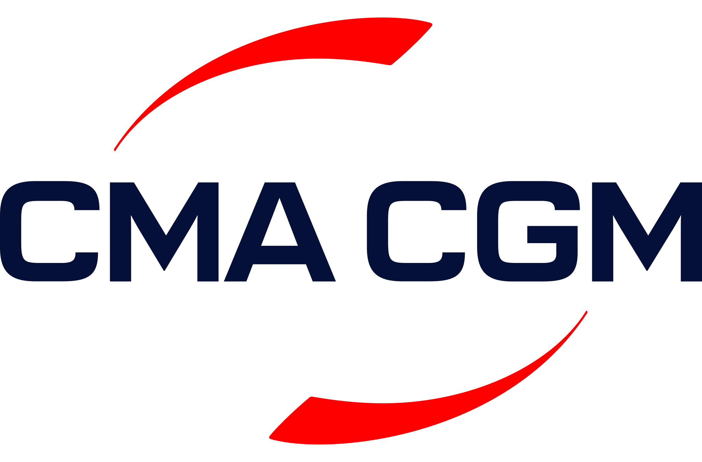

Antwerp to BCTN Meerhout, the 70 km the e-barge works. Real vessels, real locks and bridges, and a seat at the helm.
Digital twin powered by·

00:00Day 1
Vessels on the corridor now
Loading the live AIS feed…
Positions from AIS receivers along the canal (aisstream.io). Coverage east of Antwerp is thin and vessels can go quiet for an hour, so a vessel that has not reported for a while is shown faded. Times are Brussels time.
Take a vessel through the corridor
Choose a route, cargo and a start time. The corridor answers with real geometry: the three lock complexes, the bridges, the hub at Meerhout and the hour of the day you leave. Up to four players share the canal; the screen splits into quadrants.
Business model shown as the trip unfolds: EaaS energy as a service at the charging hub, BaaS battery as a service when a tender moves packs, owner for the pack owner.